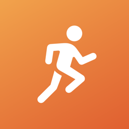
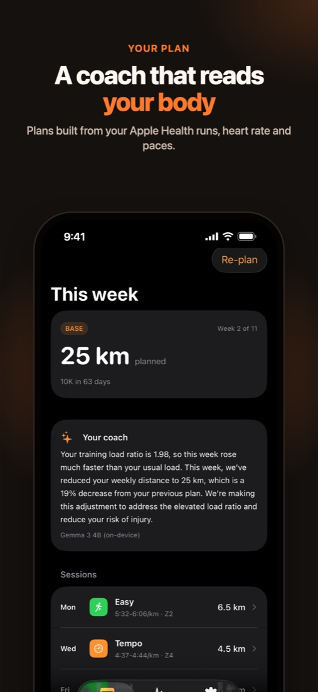
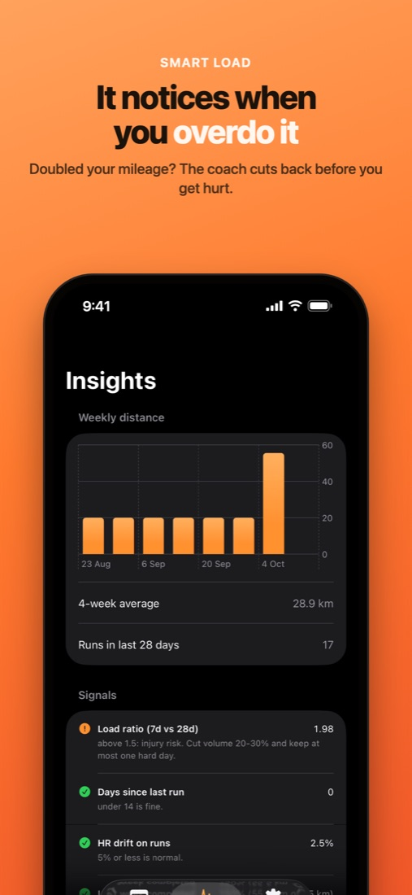
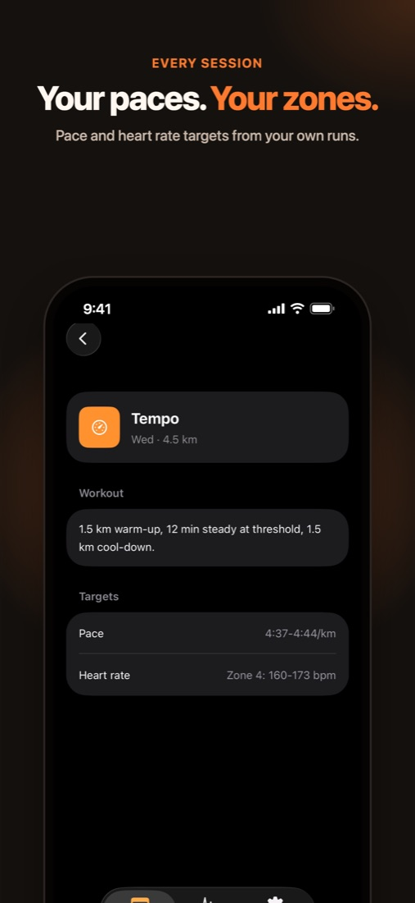
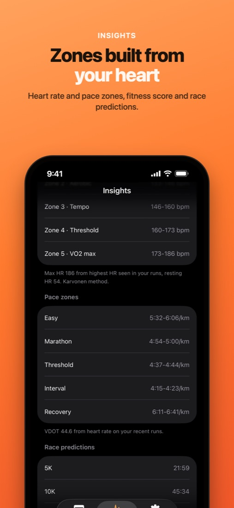
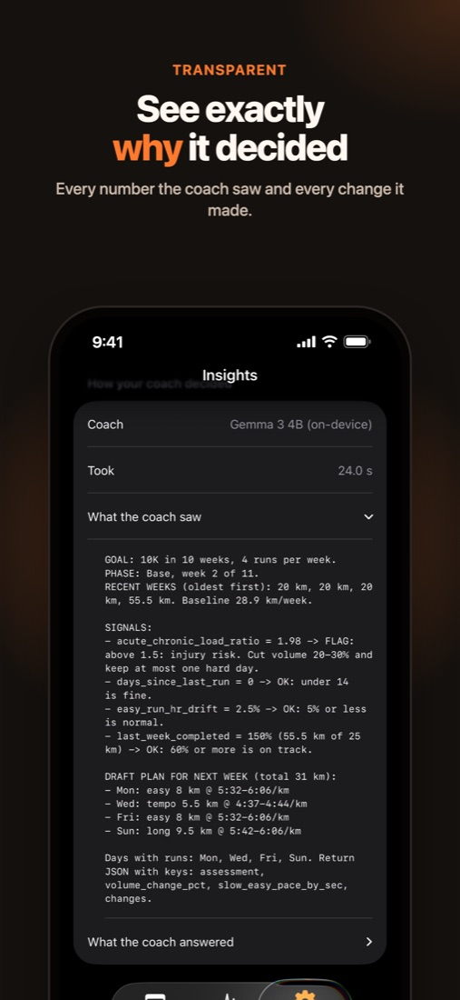
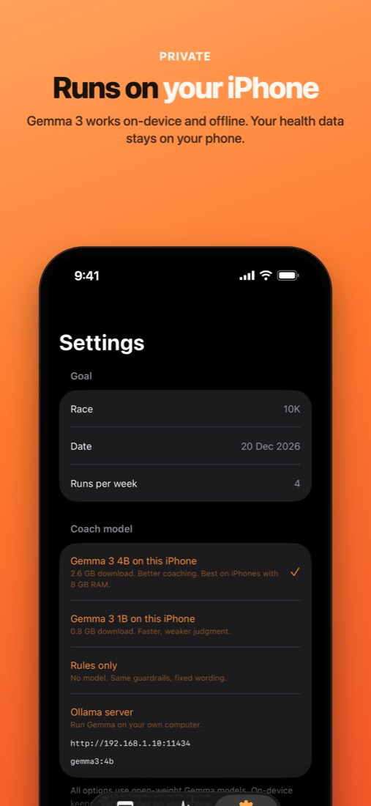

Sample listing. OpenStride is not on the App Store yet. Back to the demo

OpenStride: AI Running Coach
Plans from your heart and pace
Ansh Saini
$10₹599 in India. One-time purchase.Ratings
New
No ratings yet
Age
4+
Years old
Category
Health
& Fitness
Developer
AS
Ansh Saini
Preview






Your running plan, built from your Apple Health data and adjusted every week by a coach that runs on your iPhone. Pay once. No account, no subscription.
OpenStride reads your runs and heart rate from Apple Health and plans your training week around them.
Each week the coach checks four things:
• Load ratio: did this week jump far above your usual training?
• Heart rate drift: are your easy runs too fast?
• Time off: are you coming back from a break?
• Last week: how much of the plan did you finish?
If something is off, it changes the plan and tells you why in a short note. If everything is in range, the plan builds as scheduled.
The Insights tab shows every number the coach used and every change it made.
The coach is Gemma 3, an open-weight model that runs on your iPhone. With the on-device coach, your health data stays on your phone. No account or analytics.
OpenStride is a training tool and does not give medical advice.
What's New
Version 1.0. First release.
App Privacy
Data Not Collected
The developer does not collect any data from this app. Health data is read on the device and stays there.
On-device coach
Plans are written by Gemma 3 on your iPhone. The model downloads once (2.6 GB, or 0.8 GB for the smaller one), then planning works offline.
Information
- Seller
- Ansh Saini
- Size
- 45 MB, plus one-time model download
- Category
- Health & Fitness
- Compatibility
- iPhone, iOS 17 or later
- Languages
- English
- Price
- $10 (₹599 in India)